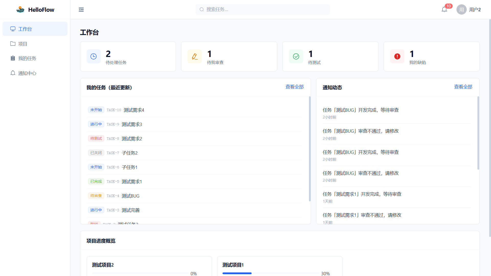
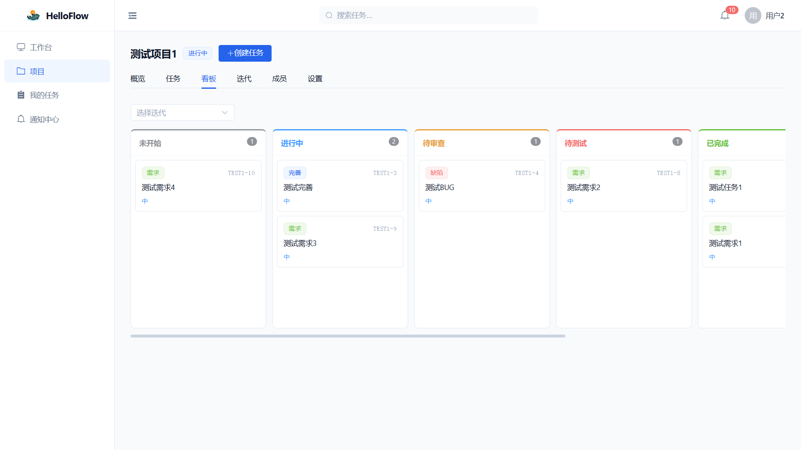
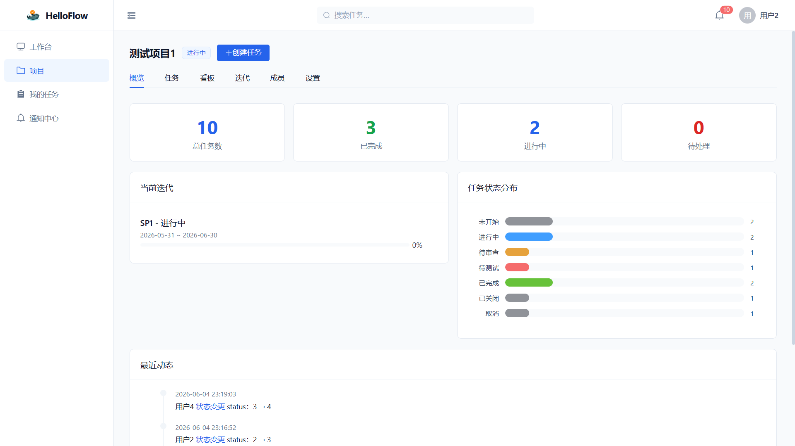
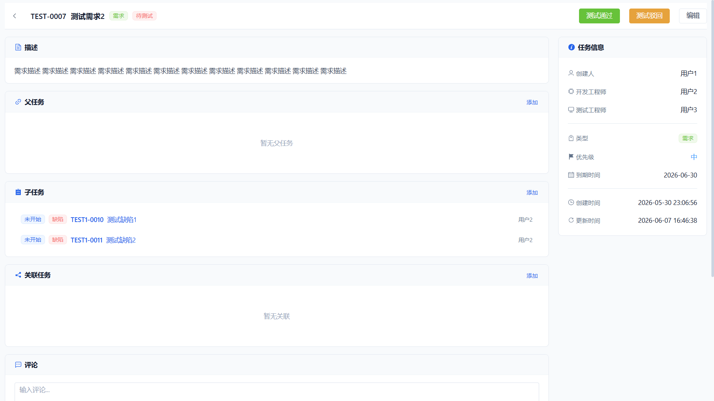
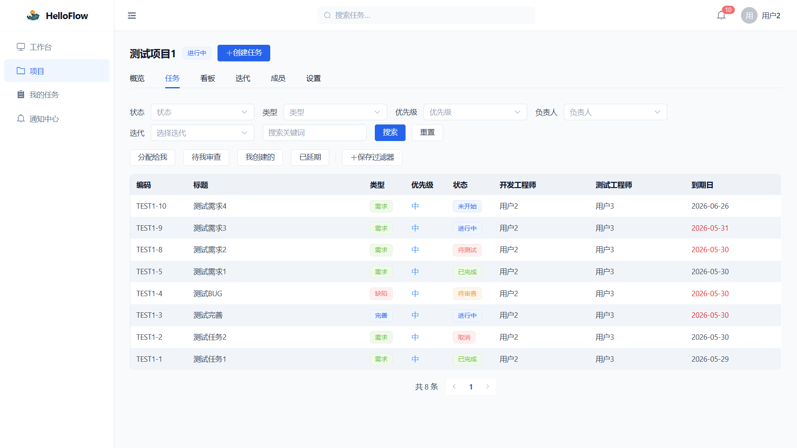

专注研发管理核心流程，让团队协作更高效、更清晰
从需求提出到任务关闭，覆盖开发、审查、测试完整链路，一个工具搞定全部
状态驱动的工作流，未开始→进行中→待审查→待测试→已完成，每一步都清晰可控
PM/DEV/QA 各司其职，审查通过自动指派测试，重新打开自动指派开发
拖拽看板、燃尽图、成员工作量统计，数据驱动决策，项目进度一目了然
按状态分列展示任务卡片，支持拖拽变更任务状态。提供项目级和迭代级看板，卡片按优先级自动排序，让团队对项目全貌了然于胸。

以迭代为核心组织开发节奏，燃尽图实时展示理想线与实际线对比，帮助团队及时发现偏差并调整。

测试阶段提交缺陷自动创建子任务并指派开发工程师，缺陷解决后重新验证父任务，实现完整的缺陷闭环管理。

按状态、类型、优先级、处理人、迭代等维度灵活筛选，支持快捷筛选和保存常用过滤器，大幅提升任务检索效率。

清晰的任务流转路径，每一步都可控可追溯
自动指派测试工程师
自动指派开发工程师
自动指派项目开发主责
主流技术栈，稳定可靠，易于二次开发
运行环境
后端框架
ORM 框架
关系数据库
前端框架
构建工具
UI 组件库
数据可视化
身份认证
八大功能模块，满足研发团队的核心需求
以项目为核心组织研发工作，清晰的项目结构和角色分工，一页掌握项目全貌。
覆盖任务全生命周期的流转与跟踪，支持三种类型、五级优先级、子任务关联和完整操作历史。
状态驱动的任务流转，审查与测试闭环。七种状态流转，审查不通过可打回，缺陷自动创建子任务。
拖拽式任务流转，按状态分列展示任务卡片，支持项目级和迭代级看板，直观掌控项目进度。
Sprint 驱动的迭代交付，燃尽图跟踪进度，任务灵活关联迭代，帮助团队节奏化开发。
站内信加邮件双通道通知，任务分配、状态变更、评论等场景自动通知，支持偏好自定义。
数据驱动决策，项目概览统计、迭代燃尽图、成员工作量统计、缺陷统计，全方位数据洞察。
RBAC 加职位双重权限模型，管理员、项目经理、开发工程师、测试工程师角色分工明确。